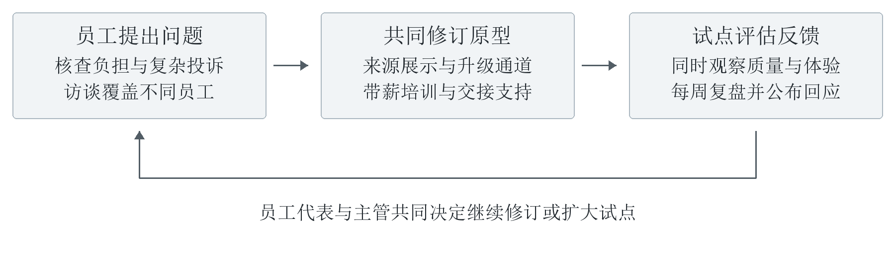

客服工作流重构
依据客服辅助研究与岗位分析绘制的拟议流程。点击节点可查看任务、责任与核查重点。
INT6140 · ePortfolio
企业如何利用AI改善服务流程，同时支持员工福祉、团队归属感与持续学习？
职业画像
把规则、证据与具体情境连接起来
关注客户权益、员工支持与收益分配
以修订记录和学习制品说明能力
工作重塑
每小时解决问题数的平均提升
按研究平均增幅换算的示意指数，基准设为100。样本为5,172名软件支持客服人员。
Brynjolfsson等，2025 ↗依据客服辅助研究与岗位分析绘制的拟议流程。点击节点可查看任务、责任与核查重点。
| 技能维度 | 任务与核查重点 | 拟保存的学习制品 |
|---|
技能矩阵呈现学习目标与验证方式，完成情况应由实际制品支持。
员工福祉
交互原型 · 模拟订单
客户询问退货进度，并提出当前客服权限以外的补偿要求。
示例规则 R-01 v1.0。超出当前客服权限的补偿请求交由主管核实。该规则为原型演示编写。
示例回复草稿 “我会先核实退货状态。您提出的补偿请求需要由具有相应权限的负责人进一步确认，我会保留当前记录并说明后续联系安排。”
请先查看依据并完成核对。

记录质量、负荷与升级等待
采用相同口径并记录背景变化
结合员工体验决定下一步
以上为拟议试点安排。原型和指标尚需企业情境验证。
学习反思
围绕文献分析与方案设计形成的认知修订节点。可通过下方学习记录持续补充。
目标数量为拟议安排，勾选状态仅记录在本机浏览器。
按实际经历填写，使用吉布斯六阶段记录认知变化。
制品与归档
| 评分项目 | 占比 | 内容位置 |
|---|
按Moodle指定页面与截止日期提交公开网址、归档报告及AI使用声明。原说明规定迟交扣30%。
参考文献